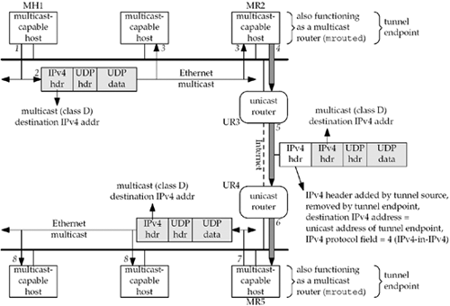

B.2 The MBone
Our first example of a virtual network that is built using tunnels is the MBone, which started around 1992 [Eriksson 1994]. If two or more hosts on a LAN support multicasting, multicast applications can be run on all these hosts and communicate with each other. To connect this LAN to some other LAN that also has multicast-capable hosts, a tunnel is configured between one host on each of the LANs, as shown in Figure B.1. We show the following numbered steps in this figure:

An application on the source host, MH1, sends a multicast datagram to a class D address.
We show this as a UDP datagram, since most multicast applications use UDP. We talk more about multicasting and how to send and receive multicast datagrams in Chapter 21.
The datagram is received by all the multicast-capable hosts on the LAN, including MR2. We note that MR2 is also functioning as a multicast router, running the mrouted program, which performs multicast routing.
MR2 prepends another IPv4 header at the front of the datagram with the destination IPv4 address of this new header set to the unicast address of the tunnel endpoint, MR5. This unicast address is configured by the administrator of MR2 and is read by the mrouted program when it starts up. Similarly, the unicast address of MR2 is configured for MR5, the other end of the tunnel. The protocol field in the new IPv4 header is set to 4, which is the value for IPv4-in-IPv4 encapsulation. The datagram is sent to the next-hop router, UR3, which we explicitly denote as a unicast router. That is, UR3 does not understand multicasting, which is the whole reason why we are using a tunnel. The shaded portion of the IPv4 datagram has not changed from what was sent in Step 1, other than the decrementing of the TTL field in the shaded IPv4 header.
UR3 looks at the destination IPv4 address in the outermost IPv4 header and forwards the datagram to the next-hop router, UR4, another unicast router.
UR4 delivers the datagram to its destination, MR5, the tunnel endpoint.
MR5 receives the datagram, and since the protocol field indicates IPv4-in-IPv4 encapsulation, it removes the first IPv4 header and then outputs the remainder of the datagram (a copy of what was multicast on the top LAN) as a multicast datagram on its LAN.
All the multicast-capable hosts on the lower LAN receive the multicast datagram.
The result is that the multicast datagram sent on the top LAN also gets transmitted as a multicast datagram on the lower LAN. This occurs even though the two routers that we show attached to these two LANs, and all the Internet routers between these two routers, are not multicast-capable.
In this example, we show the multicast routing function being performed by the mrouted program running on one host on each LAN. This is how the MBone started. But around 1996, multicast routing functionality started appearing in the routers from most major router vendors. If the two unicast routers UR3 and UR4 in Figure B.1 were multicast-capable, then we would not need to run mrouted at all, and UR3 and UR4 would function as multicast routers. But if there are still other routers between UR3 and UR4 that are not multicast-capable, then a tunnel is required. The tunnel endpoints would then be MR3 (a multicast-capable replacement for UR3) and MR4 (a multicast-capable replacement for UR4), not MR2 and MR5.
In the scenario that we show in Figure B.1, every multicast packet appears twice on the top LAN and twice on the bottom LAN: once as a multicast packet, and again as a unicast packet within the tunnel as the packet goes between the host running mrouted and the next-hop unicast router (e.g., between MR2 and UR3, and between UR4 and MR5). This extra copy is the cost of tunneling. The advantage in replacing the two unicast routers UR3 and UR4 in Figure B.1 with multicast-capable routers (what we called MR3 and MR4) is to avoid this extra copy of every multicast packet from appearing on the LANs. Even if MR3 and MR4 must establish a tunnel between themselves because some intermediate routers between them (that we do not show) are not multicast-capable, this is still advantageous since it avoids the duplicate copies on each LAN.
In fact, the MBone is virtually nonexistent at this point, having been replaced with native multicast in this manner. There are probably still tunnels present in the Internet's multicast infrastructure, but they are commonly between native multicast routers inside a service provider's network and are invisible to the end-user.
 |